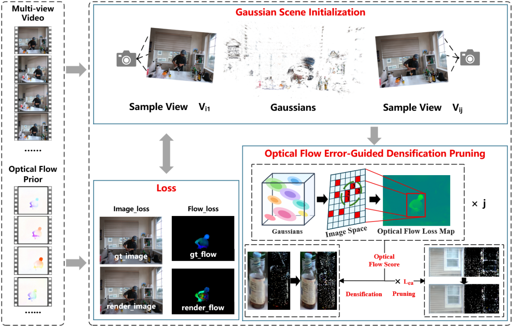
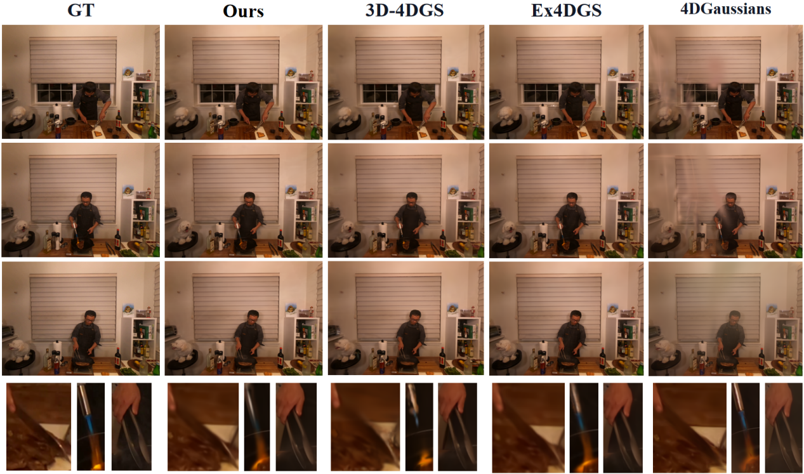
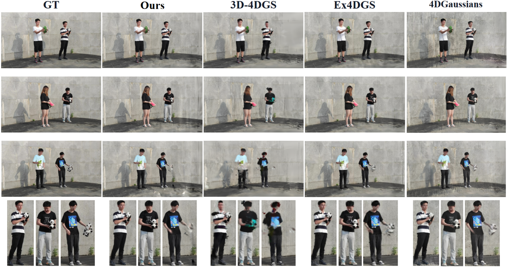

Fast · Compact · Temporally Consistent
TCC4DGS: Fast 4D Gaussian Splatting Reconstruction under Temporal Consistency Constraints
TCC4DGS uses adjacent-frame optical-flow errors to guide Gaussian densification and edge-aware pruning, balancing reconstruction quality, compactness, training efficiency, and temporal stability.
01 · Overview
Abstract
Fast 4D Gaussian Splatting (4DGS) reconstruction must balance compact Gaussian representations, short training times, and stable cross-frame motion modeling. In dynamic scenes, occlusion, motion blur, and transient appearance changes can corrupt frame-wise supervision, causing redundant densification, erroneous pruning, and temporal artifacts such as ghosting and flicker. We present TCC4DGS, a fast 4DGS reconstruction framework constrained by temporal consistency. The framework evaluates cross-frame motion consistency using optical-flow errors between adjacent frames. Gaussians that persistently cover high-temporal-error regions are selected as densification candidates, while a pruning score combines the flow reconstruction error with an edge-aware smoothness term.
We jointly gate per-Gaussian temporal-error scores and image-space gradients so that cloning or splitting is performed only in persistently under-reconstructed regions. Candidate Gaussians are subsequently evaluated to remove redundant primitives that consistently induce temporal inconsistency while preserving genuine motion boundaries. Adjacent frames from the same viewpoint are rasterized once each to obtain rendered optical flow efficiently. Experiments on Neural 3D Video and ENeRF-Outdoor show that our method maintains or improves reconstruction quality while reducing model size and accelerating training.

02 · Demo Videos
Multi-View Comparisons
Select a scene to compare six methods over the same 300-frame camera trajectory.
03 · Experiments
Experimental Results
Qualitative figures and quantitative tables are reproduced from the English manuscript.
Dataset 01
Neural 3D Video (N3DV)

| Method | PSNR ↑ | SSIM ↑ | LPIPS ↓ | Size/MB ↓ | Time/min ↓ |
|---|---|---|---|---|---|
| 4D-GS | 28.525 | 0.953 | 0.055 | 1198.12 | 150 |
| Ex4DGS | 31.600 | 0.949 | 0.044 | 40.54 | 30 |
| 3D-4DGS | 29.590 | 0.926 | 0.124 | 425.07 | 25 |
| 4DGaussians | 26.499 | 0.917 | 0.077 | 53.89 | 60 |
| 4DGaussians + FastGS | 26.756 | 0.923 | 0.076 | 19.62 | 30 |
| 4DGaussians + Ours | 27.869 | 0.927 | 0.074 | 16.47 | 32 |
| STGS | 31.754 | 0.947 | 0.046 | 23.74 | 25 |
| STGS + FastGS | 31.002 | 0.945 | 0.049 | 16.52 | 13 |
| STGS + Ours | 31.841 | 0.944 | 0.053 | 10.83 | 15 |
Dataset 02
ENeRF-Outdoor

| Method | PSNR ↑ | SSIM ↑ | LPIPS ↓ | Size/MB ↓ | Time/min ↓ |
|---|---|---|---|---|---|
| 4D-GS | 24.627 | 0.793 | 0.128 | 4699.41 | 240 |
| Ex4DGS | 25.644 | 0.817 | 0.121 | 71.64 | 25 |
| 3D-4DGS | 22.822 | 0.593 | 0.425 | 390.41 | 17 |
| 4DGaussians | 20.950 | 0.581 | 0.344 | 177.24 | 130 |
| 4DGaussians + FastGS | 22.346 | 0.654 | 0.283 | 61.79 | 60 |
| 4DGaussians + Ours | 22.830 | 0.689 | 0.261 | 53.07 | 70 |
| STGS | 23.737 | 0.837 | 0.102 | 94.07 | 17 |
| STGS + FastGS | 23.851 | 0.830 | 0.124 | 65.87 | 13 |
| STGS + Ours | 25.865 | 0.849 | 0.102 | 53.77 | 15 |